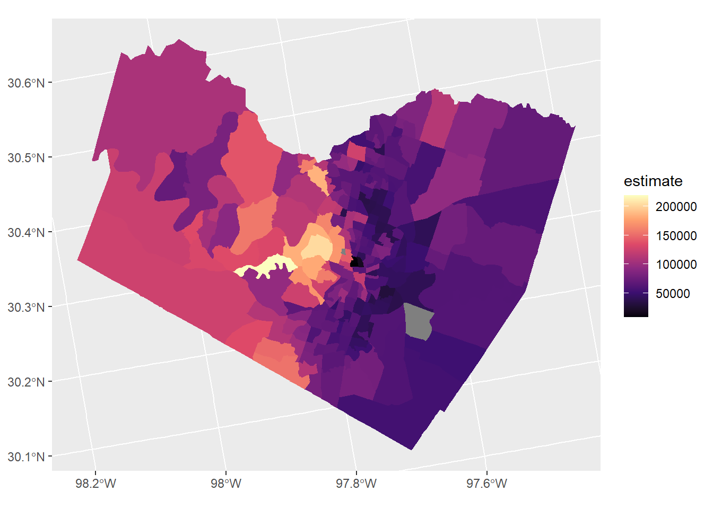

Chapter 3 Vector data with sf
- Some key aspects of sf

Figure 3.1: Sticky geometry with sf
Load tidycensus - you’ll need to set your Census API key. A key can be obtained from here.
## Warning: package 'tidycensus' was built under R version 4.0.2## Warning: package 'tidyverse' was built under R version 4.0.2## -- Attaching packages --------## v tidyr 1.1.0 v stringr 1.4.0
## v readr 1.3.1 v forcats 0.5.0
## v purrr 0.3.4## Warning: package 'tidyr' was built under R version 4.0.2## Warning: package 'readr' was built under R version 4.0.2## Warning: package 'forcats' was built under R version 4.0.2## -- Conflicts -----------------
## x lubridate::as.difftime() masks base::as.difftime()
## x lubridate::date() masks base::date()
## x dplyr::filter() masks stats::filter()
## x lubridate::intersect() masks base::intersect()
## x dplyr::lag() masks stats::lag()
## x lubridate::setdiff() masks base::setdiff()
## x lubridate::union() masks base::union()library(tidycensus)
library(ggplot2)
options(tigris_use_cache = TRUE)
austin_tracts <- get_acs(state = 'TX', county = 'Travis', geography = "tract",
variables = "B19013_001", geometry = TRUE)## Getting data from the 2014-2018 5-year ACSaustin_tracts %>%
ggplot(aes(fill = estimate)) +
geom_sf(color = NA) +
coord_sf(crs = 26911) +
scale_fill_viridis_c(option = "magma") 
3.0.1 Challenge: Chained spatial operation
Earlier we showed example of printing and storing a statement using parens
## [1] "C:/Users/mweber/R/library/sf/gpkg/nc.gpkg"How would we read this file into an sf data frame using chained operation?
3.0.2 Answer
## Simple feature collection with 100 features and 14 fields
## geometry type: MULTIPOLYGON
## dimension: XY
## bbox: xmin: -84.32385 ymin: 33.88199 xmax: -75.45698 ymax: 36.58965
## geographic CRS: NAD27
## # A tibble: 100 x 15
## AREA PERIMETER CNTY_ CNTY_ID NAME FIPS FIPSNO CRESS_ID BIR74 SID74 NWBIR74
## <dbl> <dbl> <dbl> <dbl> <chr> <chr> <dbl> <int> <dbl> <dbl> <dbl>
## 1 0.114 1.44 1825 1825 Ashe 37009 37009 5 1091 1 10
## 2 0.061 1.23 1827 1827 Alle~ 37005 37005 3 487 0 10
## 3 0.143 1.63 1828 1828 Surry 37171 37171 86 3188 5 208
## 4 0.07 2.97 1831 1831 Curr~ 37053 37053 27 508 1 123
## 5 0.153 2.21 1832 1832 Nort~ 37131 37131 66 1421 9 1066
## 6 0.097 1.67 1833 1833 Hert~ 37091 37091 46 1452 7 954
## 7 0.062 1.55 1834 1834 Camd~ 37029 37029 15 286 0 115
## 8 0.091 1.28 1835 1835 Gates 37073 37073 37 420 0 254
## 9 0.118 1.42 1836 1836 Warr~ 37185 37185 93 968 4 748
## 10 0.124 1.43 1837 1837 Stok~ 37169 37169 85 1612 1 160
## # ... with 90 more rows, and 4 more variables: BIR79 <dbl>, SID79 <dbl>,
## # NWBIR79 <dbl>, geom <MULTIPOLYGON [°]>A question to use on a spatial tibble - What type of object is ’‘? If you run head() does it behave the way you’re used to seeing head function? How might you get the behavior you’re used to seeing from head with’’